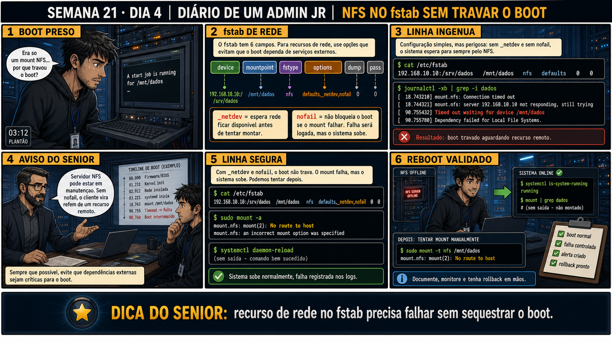

Semana 21 · Dia 4 | Nível Júnior — Redes
NFS no fstab: _netdev e nofail
um mount remoto no fstab sem cuidado pode travar o boot esperando por uma rede que ainda não chegou
ANTES DE ALTERAR, OBSERVE. DEPOIS DE ALTERAR, VALIDE.
1. O chamado
#2104
PRIORIDADE ALTA
07:50
aberto por: plantão de infraestrutura
host: múltiplos clientes NFS · serviço: boot de servidores dependentes de /etc/fstab
"Adicionei o NFS no fstab pra montar sempre no boot. Ontem o servidor NFS ficou fora do ar por manutenção, e TODOS os clientes que dependiam dele travaram no boot, mesmo os que não precisavam do NFS pra nada crítico."
O fstab tentou montar rede antes da rede estar pronta. O que falta na linha?
💡 Passa o mouse nas palavras destacadas pra ver uma dica rápida — clica se quiser a explicação completa com analogia.
2. Antes de ver as opções — tenta responder
🧠 Recall ativo: qual é a diferença de função entre _netdev e nofail — por que as duas juntas, e
não só uma?
_netdev
resolve a ORDEM: garante que o systemd só tente montar depois que a rede já estiver de pé — sem isso, o
sistema pode tentar montar um recurso de rede ANTES da própria rede existir, o que sempre falharia.
nofail resolve o QUE FAZER SE FALHAR: mesmo com a ordem certa, o servidor remoto pode estar fora do ar
por outro motivo — nofail garante que essa falha específica não trave o boot inteiro. Uma resolve a
ordem, a outra resolve a tolerância a falha; as duas são necessárias, não intercambiáveis.
3. Questão comentada — clica numa alternativa
Qual linha de /etc/fstab monta /dados/uploads do servidor 10.10.10.50 de forma
persistente, sem travar o boot se o servidor estiver indisponível?
💡 Analogia do Sênior para Fixar: O princípio fundamental de 04 NFS FSTAB NOFAIL é como o alicerce de sustentação de um viaduto: garante que a estrutura de comunicação suporte alto tráfego sem colapsar.
4. Decodificador de conceitos
Clica em qualquer termo pra ver a definição completa e uma analogia do dia a dia:
5. Ferramentas e leitura da evidência
| Opção | Resolve |
|---|---|
_netdev | A ORDEM — espera a rede subir antes de tentar montar. |
nofail | A TOLERÂNCIA — não trava o boot se a montagem falhar mesmo assim. |
mount -a | Testa todas as entradas do fstab sem precisar reiniciar. |
--- /etc/fstab correto do chamado #2104 --- 10.10.10.50:/dados/uploads /mnt/uploads nfs defaults,_netdev,nofail 0 0 $ sudo mount -a $ mount | grep uploads 10.10.10.50:/dados/uploads on /mnt/uploads type nfs4 (rw,relatime,...) --- simulando servidor fora do ar --- $ sudo systemctl stop nfs-server # no servidor, simulando indisponibilidade $ sudo reboot # no cliente --- pós-boot no cliente --- $ systemctl status ● system — running ← boot completou normalmente, sem travar $ mount | grep uploads (nada aparece — a montagem falhou, mas isso não impediu o resto do boot)
5.1 O painel 5 da prancha de hoje mostra o técnico achando que nofail sozinho já resolveria tudo, sem precisar de _netdev
Um colega remove _netdev, mantendo só nofail, achando que basta não travar o boot.
Mesmo com nofail sozinho evitando o travamento do boot, por que ainda vale a
pena manter _netdev junto?
💡 Analogia do Sênior para Fixar: Diagnosticar anomalias em 04 NFS FSTAB NOFAIL é como o eletricista usando o multímetro no quadro de disjuntores: mede a passagem de sinal no ponto exato da falha.
5.2 "Se o boot não travou, isso significa que a montagem funcionou?"
Um colega vê o sistema bootar normalmente com nofail configurado, e assume que isso já confirma que o NFS foi montado com sucesso.
Por que o boot completar sem travar, com nofail configurado, NÃO é garantia de
que a montagem realmente aconteceu?
💡 Analogia do Sênior para Fixar: Aplicar as boas práticas de 04 NFS FSTAB NOFAIL é como o protocolo de segurança da aviação: elimina pontos únicos de falha e garante previsibilidade operacional.
6. Procedimento profissional
- Ao adicionar um mount NFS no fstab, sempre inclua _netdev e nofail juntos.
- Teste com mount -a antes de confiar que a linha está correta, sem precisar reiniciar.
- Simule indisponibilidade do servidor (parando o serviço NFS nele) e confirme que o cliente ainda bota normalmente.
- Depois de qualquer boot, confirme explicitamente com mount ou df -h que a montagem realmente aconteceu.
- Documente qual serviço/aplicação depende desse mount, pra saber o impacto se ele falhar silenciosamente.
7. Laboratório guiado — marca conforme for testando
Segurança: execute os testes apenas em VMs descartáveis e confirme nomes de discos, hosts e arquivos antes de cada comando.
- CENÁRIOAção: Prepare o export do lado servidor antes do laboratório — hoje o risco é especificamente sobre a linha do /etc/fstab, não sobre criar o export de novo.sudo apt install -y nfs-kernel-server nfs-common sudo mkdir -p /dados/uploads /mnt/uploads echo '/dados/uploads 127.0.0.1(rw,sync,no_subtree_check)' | sudo tee -a /etc/exports sudo exportfs -ra exportfs -vResultado esperado: exportfs -v mostra /dados/uploads liberado pra 127.0.0.1 — o export já existe, pronto pra você escrever a linha de fstab no próximo passo.Por que fizemos isso: pra isolar o aprendizado de hoje (_netdev e nofail), o export do lado servidor já vem pronto, sem exigir que você repita o que já viu nos Dias 1 e 2.Cilada comum: só em VM descartável — editar fstab errado pode travar boots futuros até você corrigir manualmente numa shell de emergência.
Se o seu resultado foi diferente
"exportfs: /dados/uploads does not support NFS export" → confirme que o diretório existe:sudo mkdir -p /dados/uploads. - Adicione uma linha NFS no fstab de uma VM cliente de laboratório, com _netdev,nofail.Resultado esperado: mount -a monta o diretório sem erro.
- Pare o serviço NFS na VM servidor, e reinicie a VM cliente.Resultado esperado: boot completa normalmente, sem travar em emergency shell.🧑🏫 Aqui entra o Mentor (em breve): se o boot travar mesmo assim, este é o ponto onde o chat com o Sênior-IA vai te ajudar a checar se as duas opções estão realmente na linha do fstab.
- Depois do boot, confirme com mount ou df -h se a montagem NFS realmente aconteceu.Resultado esperado: montagem ausente (já que o servidor estava fora do ar) — boot ok, montagem não.
- Suba o serviço NFS de novo no servidor, e rode mount -a manualmente no cliente.Resultado esperado: montagem bem-sucedida agora, sem precisar reiniciar o cliente.
- CENÁRIOAção: Restaure o /etc/fstab ao estado original e remova o export e os diretórios de teste.sudo umount /mnt/uploads sudo sed -i '/uploads/d' /etc/fstab sudo sed -i '/uploads/d' /etc/exports sudo exportfs -ra sudo rm -rf /dados/uploads /mnt/uploads grep uploads /etc/fstab || echo "fstab limpo"
🔍 Detalhar esse comando
- sed -i
- Edita o arquivo diretamente (in-place), sem precisar abrir um editor.
- '/uploads/d'
- Padrão de endereço + comando: qualquer linha que contenha "uploads" (o padrão) é deletada (o 'd' no final).
- /etc/fstab
- O arquivo de montagens automáticas do boot — remover a linha aqui evita que o próximo boot tente montar um recurso que já foi desfeito.
Resultado esperado: a mensagem "fstab limpo" confirma que nenhuma linha de teste sobrou no arquivo que controla o boot da sua VM.Por que fizemos isso: um /etc/fstab com lixo de laboratório só dói no PRÓXIMO reboot, semanas depois — desfazer agora, com a shell ainda disponível, é bem mais barato que descobrir isso numa manutenção real.Cilada comum: rodar o sed no fstab sem antes desmontar pode deixar o systemd tentando gerenciar um mount cuja linha correspondente já sumiu — sempre desmonte primeiro.
8. Validação e encerramento
- _netdev garante que a montagem só é tentada depois da rede estar pronta.
- nofail garante que uma falha de montagem não trave o boot inteiro.
- As duas opções resolvem problemas diferentes — nenhuma substitui a outra.
- Boot sem travar não é garantia de montagem bem-sucedida — sempre confirme com mount ou df -h.
Rollback e limites
Editar o fstab é reversível — sempre teste com mount -a antes de reiniciar de
verdade, exatamente como a disciplina já vista na Semana 12. O risco real é confiar demais no nofail:
aplicações que dependem daquele diretório podem falhar silenciosamente se ele não for montado, sem nenhum
aviso explícito além de checar manualmente.
💡 Sobre repetição espaçada: "testar com mount -a antes de reiniciar de
verdade" é exatamente a mesma disciplina da Semana 12 (fstab quebrado) — vale reforçar esse hábito como
padrão permanente, não só pra esse tipo específico de entrada. O Anki vai conectar os dois.
9. Resposta final
Alternativa correta: A. Nesta aula, a linha correta combinou _netdev e
nofail juntos. O ponto central do caso é este: um mount remoto no fstab sem cuidado pode travar o boot
esperando por uma rede que ainda não chegou.
🔓 O que você desbloqueou hoje
Capacidade de configurar NFS persistente no fstab sem arriscar o boot. Amanhã
fecha a Semana 21 com um diagnóstico em camadas: por que uma escrita pode falhar mesmo com tudo aparentemente
certo — export, permissão, UID e fstab — juntando tudo que você aprendeu essa semana.